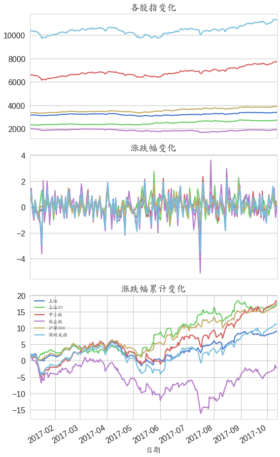

股票线性回归分析
股票数据采集
使用tushare提供的接口采集2017年3000多个股信息，同时采集了三年的大盘信息，使用pymysql与mysql数据库进行交互，具体采集过程略过。
数据清洗与分析
tushare提供的新浪财经上的数据，数据无明显的缺失和错误。
首先选择合适的股指指数，然后对个股与大盘指数的关系进行分析，即尝试使用线性回归对个股与大盘的关系进行分析，进而找出一些“强势”股票。
假定股票投资收益率与市场收益率存在着线性相关关系，则股票投资收益率灵敏度系数可以用线性回归模型估计，其公式如下：
R—资产的预期投资收益率；
$R_M$—资本市场的平均投资收益率；
β—风险矫正系数，即对资本市场系统风险变化的敏感程度；
$\alpha$—常数项，超出市场的部分；
ε—误差项；
import pandas as pd
import numpy as np
import matplotlib.pyplot as plt
import seaborn as sns
sns.set(style="whitegrid", palette="muted", font_scale=1.0, color_codes=True, context="talk")
%matplotlib inline
from matplotlib.font_manager import FontProperties
font = FontProperties(fname=r"/usr/share/fonts/truetype/arphic/ukai.ttc")
import sys
reload(sys)
sys.setdefaultencoding('utf-8')
import datetime
import pymysql
from scipy import stats
股指数据处理
# 处理股指数据
si = pd.read_csv("./stock_index_all.csv", parse_dates=True, index_col="sdate")
si.shape # (4404,8)
sname = si["sindex"].unique()
si["sindex"].replace(sname, [u"创业板",u"沪深300",u"上证",
u"深圳成指",u"上证50",u"中小板"], inplace=True)
# 透视表
si_pv = si.pivot_table(index=si.index, columns="sindex")
si_pv.head(3)
|
open |
close |
... |
price_change |
p_change |
| sindex |
上证 |
上证50 |
中小板 |
创业板 |
沪深300 |
深圳成指 |
上证 |
上证50 |
中小板 |
创业板 |
... |
中小板 |
创业板 |
沪深300 |
深圳成指 |
上证 |
上证50 |
中小板 |
创业板 |
沪深300 |
深圳成指 |
| sdate |
|
|
|
|
|
|
|
|
|
|
|
|
|
|
|
|
|
|
|
|
|
| 2014-10-14 |
2362.802 |
1603.347 |
5593.922 |
1546.666 |
2451.094 |
8150.859 |
2359.475 |
1600.299 |
5577.213 |
1539.119 |
... |
-22.859 |
-9.208 |
-8.384 |
-24.106 |
-0.28 |
-0.35 |
-0.41 |
-0.59 |
-0.34 |
-0.29 |
| 2014-10-15 |
2358.233 |
1599.895 |
5577.844 |
1539.347 |
2444.538 |
8141.143 |
2373.670 |
1612.772 |
5611.542 |
1545.623 |
... |
34.329 |
6.504 |
17.312 |
58.163 |
0.60 |
0.78 |
0.62 |
0.42 |
0.71 |
0.71 |
| 2014-10-16 |
2361.130 |
1602.383 |
5587.709 |
1539.858 |
2448.968 |
8156.785 |
2356.499 |
1608.735 |
5525.425 |
1526.560 |
... |
-86.117 |
-19.063 |
-19.479 |
-87.437 |
-0.72 |
-0.25 |
-1.53 |
-1.23 |
-0.79 |
-1.07 |
3 rows × 42 columns
# 删除股指缺失数据，原始数据错误
ss = si_pv["open"][u"上证"]
sst = si_pv[ss.isnull()].index.date
miss_date = []
for i in sst:
date_str = datetime.datetime.strftime(i, "%Y-%m-%d")
miss_date.append(date_str)
miss_date
['2015-02-24', '2015-10-07', '2017-02-02', '2017-05-30']
si_pv.drop(sst, inplace=True)
si_pv.shape # (733, 42)
(733, 42)
si_close = si_pv["close"]
si_change = si_pv["p_change"]
si_volume = si_pv["volume"]
si_close.head(3)
| sindex |
上证 |
上证50 |
中小板 |
创业板 |
沪深300 |
深圳成指 |
| sdate |
|
|
|
|
|
|
| 2014-10-14 |
2359.475 |
1600.299 |
5577.213 |
1539.119 |
2446.562 |
8139.961 |
| 2014-10-15 |
2373.670 |
1612.772 |
5611.542 |
1545.623 |
2463.874 |
8198.124 |
| 2014-10-16 |
2356.499 |
1608.735 |
5525.425 |
1526.560 |
2444.395 |
8110.687 |
si_close.plot(figsize=(8,6))
plt.xlabel(u"日期", fontsize=16, fontproperties=font)
plt.title(u"各股指指数变化", fontsize=25, fontproperties=font)
# plt.yticks(ax1.get_yticks(), ax1.get_yticks() * 100)
plt.ylabel('指数', fontproperties=font, fontsize=16)
plt.gca().yaxis.grid(True, linestyle = ":")
plt.gca().xaxis.grid(True, linestyle = ":")
plt.legend(loc='best', prop=font, fontsize=12)
<matplotlib.legend.Legend at 0x7f99aaf3b410>
fig1, (ax1, ax2, ax3) = plt.subplots(3,1, figsize=(10, 13))
si_close.plot(ax=ax1, use_index=False, xticks=[], legend=False, fontsize=16)
si_change.plot(ax=ax2, use_index=False, xticks=[], legend=False, fontsize=16)
si_change_cumsum = si_change.cumsum()
si_change_cumsum.plot(ax=ax3, fontsize=16, legend=False)
ax1.set_title(u"各股指变化", fontproperties=font, fontsize=19)
ax2.set_title(u"涨跌幅变化", fontproperties=font, fontsize=19)
ax3.set_title(u"涨跌幅累计变化", fontproperties=font, fontsize=19)
plt.tight_layout()
plt.xlabel(u"日期", fontproperties=font, fontsize=16)
plt.legend(loc='best', prop=font, fontsize=15)
<matplotlib.legend.Legend at 0x7f99aa280f90>
# 2017年的股指数据
ssi_close = si_close['2017-1':'2017-10']
ssi_change = si_change['2017-1':'2017-10']
ssi_volume = si_volume['2017-1':'2017-10']
ssi_close.head(3)
| sindex |
上证 |
上证50 |
中小板 |
创业板 |
沪深300 |
深圳成指 |
| sdate |
|
|
|
|
|
|
| 2017-01-03 |
3135.92 |
2307.89 |
6510.90 |
1963.26 |
3342.23 |
10262.85 |
| 2017-01-04 |
3158.79 |
2322.21 |
6600.20 |
1991.57 |
3368.31 |
10384.87 |
| 2017-01-05 |
3165.41 |
2322.68 |
6587.13 |
1983.97 |
3367.79 |
10371.47 |
fig2, (ax1, ax2, ax3) = plt.subplots(3,1, figsize=(8, 13))
ssi_close.plot(ax=ax1, use_index=False, xticks=[], fontsize=16,legend=False)
ssi_change.plot(ax=ax2, use_index=False, xticks=[],legend=False, fontsize=16)
ssi_change_cumsum = ssi_change.cumsum()
ssi_change_cumsum.plot(ax=ax3, fontsize=16, legend=True)
ax1.set_title(u"各股指变化", fontproperties=font, fontsize=19)
ax2.set_title(u"涨跌幅变化", fontproperties=font, fontsize=19)
ax3.set_title(u"涨跌幅累计变化", fontproperties=font, fontsize=19)
plt.tight_layout()
plt.legend(loc='best', prop=font, fontsize=15)
plt.xlabel(u"日期", fontproperties=font, fontsize=16)
<matplotlib.text.Text at 0x7f99a8429ed0>

def corr_plot(dataframe, method='pearson', plot_title=None, figsize=(10,8)):
si_corr = dataframe.corr(method=method)
siname = si_corr.columns.values
plt.figure(figsize=figsize)
g = sns.heatmap(si_corr, cbar=True, annot=True,
square=True, fmt=".2f",
annot_kws={'size': 12},
yticklabels=siname,xticklabels=siname)
plt.yticks(g.get_yticks(), fontproperties=font, fontsize=16)
plt.xticks(g.get_xticks(), fontproperties=font, fontsize=16)
plt.xlabel("")
plt.ylabel("")
plt.title(plot_title, fontproperties=font, fontsize=20)
corr_plot(ssi_change, u"近一年各股指相关关系")
corr_plot(si_change, u"近三年各股指相关关系")
ssi_change.shape # (190, 6)
ssi_change.head(3)
| sindex |
上证 |
上证50 |
中小板 |
创业板 |
沪深300 |
深圳成指 |
| sdate |
|
|
|
|
|
|
| 2017-01-03 |
1.04 |
0.92 |
0.60 |
0.06 |
0.97 |
0.84 |
| 2017-01-04 |
0.73 |
0.62 |
1.37 |
1.44 |
0.78 |
1.19 |
| 2017-01-05 |
0.21 |
0.02 |
-0.20 |
-0.38 |
-0.01 |
-0.13 |
ssi_change.describe()
| sindex |
上证 |
上证50 |
中小板 |
创业板 |
沪深300 |
深圳成指 |
| count |
188.000000 |
188.000000 |
188.000000 |
188.000000 |
188.000000 |
188.000000 |
| mean |
0.047606 |
0.094096 |
0.096436 |
-0.011862 |
0.091064 |
0.059202 |
| std |
0.534457 |
0.635277 |
0.831965 |
1.024665 |
0.575751 |
0.829573 |
| min |
-1.630000 |
-1.570000 |
-2.820000 |
-5.110000 |
-1.840000 |
-3.570000 |
| 25% |
-0.300000 |
-0.330000 |
-0.445000 |
-0.630000 |
-0.292500 |
-0.432500 |
| 50% |
0.070000 |
0.065000 |
0.085000 |
0.060000 |
0.095000 |
0.110000 |
| 75% |
0.362500 |
0.472500 |
0.652500 |
0.557500 |
0.392500 |
0.592500 |
| max |
1.830000 |
2.740000 |
2.720000 |
3.620000 |
1.800000 |
2.220000 |
根据线图和pearson相关关系图，各大股指有一定的相关性，尤其是上证、深圳成指、创业板，由此可以选择上证为衡量的股指指数。
个股数据处理
stock_id= pd.read_csv("./stock_id.csv", header=None, dtype=str)
stock_id.head(10)
stock_id.shape
(3413, 1)
stocks = pd.read_csv("./stocks_all.csv", parse_dates=True, index_col="ssdate", dtype=str)
for i in ["open", "close", "volume", "p_change"]:
stocks[i] = stocks[i].astype(np.float)
stocks.dtypes
ssindex object
open float64
close float64
volume float64
p_change float64
dtype: object
stocks.head(2)
|
ssindex |
open |
close |
volume |
p_change |
| ssdate |
|
|
|
|
|
| 2017-01-03 |
300425 |
30.47 |
30.64 |
10473.89 |
0.86 |
| 2017-01-04 |
300425 |
30.64 |
30.97 |
10098.92 |
1.08 |
stocks.count()
ssindex 543445
open 543445
close 543445
volume 543445
p_change 543445
dtype: int64
ssi_change.count()
sindex
上证 188
上证50 188
中小板 188
创业板 188
沪深300 188
深圳成指 188
dtype: int64
个股数据基本无缺失值，统计了17年截至目前共计188天交易日的数据
线性回归分析个股与大盘的关系
# 股票id
stocks_id = stocks["ssindex"].unique()
regress_weights = pd.DataFrame()
columns=["ssindex", "sindex", "beta", "alpha", "r_value", "p_value", "sigma", "coeff"]
for i in stocks_id:
one_stock = stocks.loc[stocks["ssindex"] == i, ["p_change"]]
index_stock = ssi_change[[u"上证", u"创业板", u"深圳成指"]]
result = pd.merge(one_stock, index_stock, left_index=True, right_index=True)
corr_s = result.corr()
corrs = corr_s.loc[corr_s.index == "p_change", corr_s.index != "p_change"]
for j in ([u"上证", u"创业板", u"深圳成指"]):
# 个股与大盘指数
cof = stats.linregress(result[j], result["p_change"])
cof = list(cof)
cof.insert(0, j)
cof.insert(0, i)
cof.append(corrs[j].values[0])
regress_weights = regress_weights.append(pd.Series(cof), ignore_index=True)
regress_weights.columns = columns
# regress_weights.to_csv("./stocks_linear_reg.csv", index=False)
regress_weights.head(3)
|
ssindex |
sindex |
beta |
alpha |
r_value |
p_value |
sigma |
coeff |
| 0 |
300425 |
上证 |
1.982162 |
-0.226491 |
0.435494 |
4.212572e-10 |
0.300425 |
0.435494 |
| 1 |
300425 |
创业板 |
1.370130 |
-0.115876 |
0.577131 |
4.361627e-18 |
0.142157 |
0.577131 |
| 2 |
300425 |
深圳成指 |
1.630604 |
-0.228663 |
0.556075 |
1.188637e-16 |
0.178702 |
0.556075 |
target_cof = regress_weights[regress_weights["alpha"] > 0.2] # 11%股票alpha > 0.2
target_stock_index_temp = target_cof["ssindex"].unique() # 443
target_stock_index = list(set(target_stock_index1) | set(target_stock_index_temp))
rw = pd.pivot_table(regress_weights, index=["ssindex"], columns=["sindex"])
rw.head(2)
|
beta |
alpha |
r_value |
p_value |
sigma |
coeff |
| sindex |
上证 |
创业板 |
深圳成指 |
上证 |
创业板 |
深圳成指 |
上证 |
创业板 |
深圳成指 |
上证 |
创业板 |
深圳成指 |
上证 |
创业板 |
深圳成指 |
上证 |
创业板 |
深圳成指 |
| ssindex |
|
|
|
|
|
|
|
|
|
|
|
|
|
|
|
|
|
|
| 000001 |
1.009117 |
0.124561 |
0.371582 |
0.094619 |
0.144137 |
0.120661 |
0.422698 |
0.100032 |
0.241593 |
1.515277e-09 |
0.171984 |
0.000838 |
0.158640 |
0.090845 |
0.109434 |
0.422698 |
0.100032 |
0.241593 |
| 000002 |
0.772420 |
0.061969 |
0.555449 |
0.155289 |
0.193293 |
0.154671 |
0.179175 |
0.026400 |
0.193210 |
1.522864e-02 |
0.722779 |
0.008779 |
0.315248 |
0.174413 |
0.209659 |
0.179175 |
0.026400 |
0.193210 |
rwc = rw.swaplevel(0, 1, axis=1) # 反转列层次化索引
rwc.head(2)
| sindex |
上证 |
创业板 |
深圳成指 |
上证 |
创业板 |
深圳成指 |
上证 |
创业板 |
深圳成指 |
上证 |
创业板 |
深圳成指 |
上证 |
创业板 |
深圳成指 |
上证 |
创业板 |
深圳成指 |
|
beta |
beta |
beta |
alpha |
alpha |
alpha |
r_value |
r_value |
r_value |
p_value |
p_value |
p_value |
sigma |
sigma |
sigma |
coeff |
coeff |
coeff |
| ssindex |
|
|
|
|
|
|
|
|
|
|
|
|
|
|
|
|
|
|
| 000001 |
1.009117 |
0.124561 |
0.371582 |
0.094619 |
0.144137 |
0.120661 |
0.422698 |
0.100032 |
0.241593 |
1.515277e-09 |
0.171984 |
0.000838 |
0.158640 |
0.090845 |
0.109434 |
0.422698 |
0.100032 |
0.241593 |
| 000002 |
0.772420 |
0.061969 |
0.555449 |
0.155289 |
0.193293 |
0.154671 |
0.179175 |
0.026400 |
0.193210 |
1.522864e-02 |
0.722779 |
0.008779 |
0.315248 |
0.174413 |
0.209659 |
0.179175 |
0.026400 |
0.193210 |
rw["sigma"].describe()
| sindex |
上证 |
创业板 |
深圳成指 |
| count |
3039.000000 |
3039.000000 |
3039.000000 |
| mean |
0.318601 |
0.160160 |
0.197206 |
| std |
0.173631 |
0.088121 |
0.111256 |
| min |
0.080941 |
0.047468 |
0.055388 |
| 25% |
0.218256 |
0.108247 |
0.132529 |
| 50% |
0.275778 |
0.137372 |
0.168823 |
| 75% |
0.357421 |
0.179410 |
0.221232 |
| max |
1.294449 |
0.745507 |
0.837215 |
p_value_l = regress_weights[regress_weights["p_value"] >= 0.05]
target_stock_index1 = p_value_l["ssindex"].unique()
target_stock_index1.shape # (234,)
根据个股与大盘进行线性回归，得到三个回归参数将，其中，根据alpha的正负号可以判断个股是否优于大盘（超出市场的程度），beta是否大于１表示了对大盘的敏感程度（大于１表示敏感，反之表示不敏感），sigma可近似看成个股波动风险
# 回归系数相关性——spearman相关系数
for j in [u"上证", u"创业板", u"深圳成指"]:
temp = rwc[j][["alpha", "beta", "sigma"]]
corr_plot(temp, method="spearman", plot_title = u"{}回归系数相关关系".format(j), figsize=(8,6))
# 回归系数相关性——pearson相关系数
for j in [u"上证", u"创业板", u"深圳成指"]:
temp = rwc[j][["alpha", "beta", "sigma"]]
corr_plot(temp, method="pearson", plot_title = u"{}回归系数相关关系".format(j), figsize=(8,6))
alpha_stock = pd.DataFrame()
alpha_stock[u"上证"] = rw["alpha"][u"上证"]
alpha_stock[u"创业板"] = rw["alpha"][u"创业板"]
alpha_stock[u"深圳成指"] = rw["alpha"][u"深圳成指"]
def distribution_plot(df, plot_title=""):
for i in ["beta", "alpha", "sigma"]:
fig1, (ax1, ax2) = plt.subplots(2, 1,figsize=(8,12))
df[i].plot(kind='hist',ax=ax1, normed=True, alpha=0.7,bins=50)
df[i].plot(kind='kde',ax=ax2, style='-.', linewidth=3)
ax1.legend(loc='best', prop=font, fontsize=17)
ax2.legend(loc='best', prop=font, fontsize=17)
ax1.set_title(u"{0}{1}分布".format(plot_title, i), fontproperties=font, fontsize=19)
ax2.set_title(u"{0}{1}分布".format(plot_title, i), fontproperties=font, fontsize=19)
plt.tight_layout()
ditribution_plot(rw)
$\alpha$和$\beta$分布类似正态分布，但$\alpha$明显的右偏，表明有一些$\alpha$偏大，从相关关系图可看出$\alpha$和$\beta$有一定的负相关性，$\alpha$和$\sigma$有较大的正相关性，而$\beta$与$\sigma$有较弱的正相关性。
通过比较每月个股涨跌幅与大盘指数涨跌幅，简单的判断个股强弱，然后通过线性回归系数进行进一步判断
stocks_id = stocks["ssindex"].unique()
i = stocks_id[0]
one_stock = stocks.loc[stocks["ssindex"] == i, ["p_change"]]
index_stock = ssi_change[[u"上证"]]
result = pd.merge(one_stock, index_stock, left_index=True, right_index=True)
result.tail(3)
|
p_change |
上证 |
| ssdate |
|
|
| 2017-10-10 |
2.71 |
0.26 |
| 2017-10-11 |
0.18 |
0.16 |
| 2017-10-12 |
-1.05 |
-0.06 |
def stock_change_cumsum(stock_time, ssi_change):
stocks_id = stock_time["ssindex"].unique()
index_stock = ssi_change[[u"上证"]]
move_sum = pd.DataFrame()
for k in stocks_id:
one_stock = stock_time.loc[stock_time["ssindex"] == k, ["p_change"]]
result = pd.merge(one_stock, index_stock, left_index=True, right_index=True)
for i in np.unique(result.index.year):
for j in np.unique(result.index.month):
if j < 10:
strm = "0" + str(j)
else:
strm = str(j)
temp = str(i) + "-" + strm
try:
stock_sum = result[temp].sum()
except KeyError as e:
print(e)
else:
stock_sum = stock_sum.append(pd.Series(dict(sdate=temp)))
stock_sum = stock_sum.append(pd.Series(dict(sindex=k)))
stock_sum = stock_sum.append(pd.Series(dict(gap_sh=stock_sum["p_change"] - stock_sum[u"上证"])))
stock_sum.pop(u'上证')
move_sum = move_sum.append(stock_sum, ignore_index=True)
return move_sum
tt = stock_change_cumsum(stocks, ssi_change)
# tt.to_csv("./stocks_month_change.csv", index=False)
tt.head(3)
|
gap_sh |
p_change |
sdate |
sindex |
| 0 |
-15.70 |
-13.92 |
2017-01 |
300425 |
| 1 |
3.05 |
5.66 |
2017-02 |
300425 |
| 2 |
-6.62 |
-7.20 |
2017-03 |
300425 |
stocks_month_sum = pd.pivot_table(tt, index=["sindex"], columns=["sdate"])
stocks_month_sum.head(3)
|
gap_sh |
p_change |
| sdate |
2017-01 |
2017-02 |
2017-03 |
2017-04 |
2017-05 |
2017-06 |
2017-07 |
2017-08 |
2017-09 |
2017-10 |
2017-01 |
2017-02 |
2017-03 |
2017-04 |
2017-05 |
2017-06 |
2017-07 |
2017-08 |
2017-09 |
2017-10 |
| sindex |
|
|
|
|
|
|
|
|
|
|
|
|
|
|
|
|
|
|
|
|
| 000001 |
0.73 |
-0.99 |
-2.71 |
0.11 |
3.61 |
-0.32 |
12.20 |
3.36 |
-0.90 |
2.78 |
2.51 |
1.62 |
-3.29 |
-1.98 |
2.44 |
2.09 |
14.73 |
6.06 |
-1.26 |
3.9 |
| 000002 |
-1.37 |
-3.32 |
1.04 |
-3.21 |
10.22 |
16.76 |
-10.07 |
0.32 |
13.89 |
2.08 |
0.97 |
-0.71 |
0.46 |
-5.30 |
9.05 |
17.36 |
-6.11 |
3.02 |
13.53 |
3.2 |
| 000004 |
-17.16 |
-0.62 |
-7.19 |
NaN |
NaN |
-34.40 |
-15.69 |
1.25 |
4.56 |
4.08 |
-15.38 |
1.99 |
-7.77 |
NaN |
NaN |
-32.43 |
-13.16 |
3.95 |
4.20 |
5.2 |
sms = stocks_month_sum["gap_sh"]
sms["sum_all"] = sms.sum(axis=1)
sms["mean"] = sms.mean(axis=1)
sms["median"] = sms.median(axis=1)
sms.head(3)
| sdate |
2017-01 |
2017-02 |
2017-03 |
2017-04 |
2017-05 |
2017-06 |
2017-07 |
2017-08 |
2017-09 |
2017-10 |
sum_all |
mean |
median |
| sindex |
|
|
|
|
|
|
|
|
|
|
|
|
|
| 000001 |
0.73 |
-0.99 |
-2.71 |
0.11 |
3.61 |
-0.32 |
12.20 |
3.36 |
-0.90 |
2.78 |
17.87 |
3.249091 |
1.755000 |
| 000002 |
-1.37 |
-3.32 |
1.04 |
-3.21 |
10.22 |
16.76 |
-10.07 |
0.32 |
13.89 |
2.08 |
26.34 |
4.789091 |
1.560000 |
| 000004 |
-17.16 |
-0.62 |
-7.19 |
NaN |
NaN |
-34.40 |
-15.69 |
1.25 |
4.56 |
4.08 |
-65.17 |
-14.482222 |
-10.836111 |
stock_t = sms[sms[["median"]] > 1].dropna(how="all")
stock_t.head(3)
| sdate |
2017-01 |
2017-02 |
2017-03 |
2017-04 |
2017-05 |
2017-06 |
2017-07 |
2017-08 |
2017-09 |
2017-10 |
sum_all |
mean |
median |
| sindex |
|
|
|
|
|
|
|
|
|
|
|
|
|
| 000001 |
NaN |
NaN |
NaN |
NaN |
NaN |
NaN |
NaN |
NaN |
NaN |
NaN |
NaN |
NaN |
1.755000 |
| 000002 |
NaN |
NaN |
NaN |
NaN |
NaN |
NaN |
NaN |
NaN |
NaN |
NaN |
NaN |
NaN |
1.560000 |
| 000016 |
NaN |
NaN |
NaN |
NaN |
NaN |
NaN |
NaN |
NaN |
NaN |
NaN |
NaN |
NaN |
2.442727 |
# 个股涨跌幅大于大盘涨跌幅记为1否则记为0
month_stock_sh = stocks_month_sum["gap_sh"]
stock_p = pd.DataFrame()
for i in month_stock_sh.columns:
single_month = month_stock_sh[i].apply(lambda x: 1 if x > 0 else 0)
stock_p[i] = single_month
stock_p["positive_num"] = stock_p.sum(axis=1)
stock_p.sort_values("positive_num", ascending=False, inplace=True)
stock_p.shape
(3039, 11)
# 10个月3039多的股票，有82%的股票在共10个月份中不超过5个月的收益是大于大盘的，
# 比如有4个月的收益大于同期的大盘的的股票数目为852
stock_p["positive_num"].value_counts()
4 852
5 689
3 664
6 341
2 241
7 119
1 63
8 56
9 8
0 4
10 2
Name: positive_num, dtype: int64
# 个股涨跌幅大于大盘超过6个月的为重点研究对象
target_stock_index_ = stock_p[stock_p["positive_num"] > 6].index.values
len(target_stock_index_)
185
target_stocks = pd.DataFrame()
for i in target_stock_index_:
if target_stocks.empty:
target_stocks = stocks[stocks["ssindex"] == i]
else:
target_stocks = pd.concat([target_stocks, stocks[stocks["ssindex"] == i]], ignore_index=False)
target_stocks.shape # (34276, 5)
# target_stocks.to_csv("./target_stocks_201710.csv", index=False)
def target_stock_plot(stock_id, stocks, stock_index_change):
target_stocks = pd.DataFrame()
for i in stock_id:
if target_stocks.empty:
target_stocks = stocks[stocks["ssindex"] == i]
else:
target_stocks = pd.concat([target_stocks, stocks[stocks["ssindex"] == i]], ignore_index=False)
sigma_large = target_stocks[target_stocks["p_change"] > 11]["ssindex"].unique()
tst = target_stocks.reset_index()
tst.set_index("ssindex", inplace=True)
tst.drop(sigma_large, axis=0, inplace=True)
tst = tst.reset_index()
tst.set_index("ssdate", inplace=True)
ts_sh = tst[tst["ssindex"].str.startswith("6")]
ts_sz = tst[tst["ssindex"].str.startswith("0")]
ts_cy = tst[tst["ssindex"].str.startswith("3")]
pivot_t = list()
for i in [ts_sh, ts_sz, ts_cy]:
pivot_t.append(pd.pivot_table(i, index=[i.index], columns=[i["ssindex"]]))
stock_tar_sh = pivot_t[0]
stock_tar_sz = pivot_t[1]
stock_tar_cy = pivot_t[2]
ssindex_tar = stock_index_change[[u"上证", u"深圳成指", u"创业板"]]
sh_pchange = pd.merge(stock_tar_sh["p_change"], ssindex_tar, how="right", left_index=True, right_index=True)
sz_pchange = pd.merge(stock_tar_sz["p_change"], ssindex_tar, how="right", left_index=True, right_index=True)
cy_pchange = pd.merge(stock_tar_cy["p_change"], ssindex_tar, how="right", left_index=True, right_index=True)
return [sh_pchange, sz_pchange, cy_pchange]
data_list = target_stock_plot(target_stock_index_, stocks, ssi_change)
target_stocks.head(3)
|
ssindex |
open |
close |
volume |
p_change |
| ssdate |
|
|
|
|
|
| 2017-01-03 |
600309 |
21.55 |
22.84 |
273738.59 |
6.08 |
| 2017-01-04 |
600309 |
22.84 |
23.71 |
273070.53 |
3.81 |
| 2017-01-05 |
600309 |
23.72 |
23.47 |
110848.12 |
-1.01 |
tspv_ = target_stocks[["ssindex", "volume", "p_change"]]
tspv = pd.pivot_table(tspv, index=[tspv.index], columns=[tspv.ssindex])
tspv.head(3)
|
volume |
... |
p_change |
| ssindex |
000039 |
000063 |
000090 |
000333 |
000338 |
000402 |
000418 |
000423 |
000426 |
000429 |
... |
603577 |
603579 |
603589 |
603638 |
603689 |
603778 |
603859 |
603868 |
603939 |
603989 |
| ssdate |
|
|
|
|
|
|
|
|
|
|
|
|
|
|
|
|
|
|
|
|
|
| 2017-01-03 |
54452.85 |
200629.84 |
62564.77 |
441082.41 |
129824.97 |
124258.15 |
20953.93 |
44567.78 |
68529.82 |
76185.64 |
... |
10.00 |
NaN |
0.34 |
NaN |
NaN |
-0.61 |
6.42 |
1.02 |
0.17 |
1.28 |
| 2017-01-04 |
71462.32 |
181859.92 |
79045.98 |
358068.31 |
278103.72 |
128683.01 |
19167.08 |
63958.45 |
84513.59 |
55327.64 |
... |
9.99 |
NaN |
3.57 |
NaN |
NaN |
1.55 |
1.07 |
-0.04 |
0.10 |
0.32 |
| 2017-01-05 |
254709.69 |
302294.81 |
81780.03 |
191762.12 |
200137.56 |
67855.99 |
11631.32 |
45589.55 |
81008.58 |
66012.42 |
... |
10.02 |
NaN |
-1.59 |
NaN |
NaN |
-0.04 |
4.23 |
-0.82 |
0.20 |
-2.62 |
3 rows × 370 columns
# 利用线性回归模型评估个股与大盘的关系，进一步确定强势个股
def regression_stock(stock_data, stock_index_change, stocks_id):
regress_weights = pd.DataFrame()
columns=["ssindex", "sindex", "beta", "alpha", "r_value", "p_value", "sigma", "coeff"]
for i in stocks_id:
one_stock = stock_data.loc[stock_data["ssindex"] == i, ["p_change"]]
index_stock = stock_index_change[[u"上证"]]
result = pd.merge(one_stock, index_stock, left_index=True, right_index=True)
corr_s = result.corr()
corrs = corr_s.loc[corr_s.index == "p_change", corr_s.index != "p_change"]
for j in [u"上证"]:
cof = stats.linregress(result[j], result["p_change"])
cof = list(cof)
cof.insert(0, j)
cof.insert(0, i)
cof.append(corrs[j].values[0])
regress_weights = regress_weights.append(pd.Series(cof), ignore_index=True)
regress_weights.columns = columns
return regress_weights
target_stock_w = regression_stock(target_stocks, ssi_change, target_stock_index_)
target_stock_w.set_index("ssindex", inplace=True)
target_stock_w.describe()
|
beta |
alpha |
r_value |
p_value |
sigma |
coeff |
| count |
185.000000 |
185.000000 |
185.000000 |
1.850000e+02 |
185.000000 |
185.000000 |
| mean |
1.364059 |
0.208562 |
0.310617 |
1.952266e-02 |
0.315013 |
0.310617 |
| std |
0.589382 |
0.231631 |
0.109439 |
7.449688e-02 |
0.133513 |
0.109439 |
| min |
0.055238 |
-0.327113 |
0.037926 |
2.076057e-25 |
0.106718 |
0.037926 |
| 25% |
0.965545 |
0.091520 |
0.244631 |
5.001486e-08 |
0.230257 |
0.244631 |
| 50% |
1.324876 |
0.173365 |
0.315984 |
1.127948e-05 |
0.275821 |
0.315984 |
| 75% |
1.774391 |
0.262506 |
0.385492 |
1.014028e-03 |
0.366257 |
0.385492 |
| max |
2.917665 |
1.377041 |
0.665457 |
6.053448e-01 |
0.841204 |
0.665457 |
选择$\alpha$ > 0.2的股票
target_cof = target_stock_w[target_stock_w["alpha"] > 0.2]
target_stock_index_ = target_cof.index.unique()
tsw = target_stock_w.loc[target_stock_index_, :]
tsw.shape
(72, 7)
tsw.head(3)
|
sindex |
beta |
alpha |
r_value |
p_value |
sigma |
coeff |
| ssindex |
|
|
|
|
|
|
|
| 600309 |
上证 |
1.528217 |
0.427141 |
0.340176 |
0.000002 |
0.309757 |
0.340176 |
| 300323 |
上证 |
1.151786 |
0.427385 |
0.191409 |
0.009246 |
0.437794 |
0.191409 |
| 000568 |
上证 |
1.194345 |
0.285961 |
0.332146 |
0.000003 |
0.248692 |
0.332146 |
tsw.describe()
|
beta |
alpha |
r_value |
p_value |
sigma |
coeff |
| count |
72.000000 |
72.000000 |
72.000000 |
7.200000e+01 |
72.000000 |
72.000000 |
| mean |
1.376637 |
0.395819 |
0.261814 |
3.424837e-02 |
0.382494 |
0.261814 |
| std |
0.661657 |
0.260708 |
0.097494 |
9.132718e-02 |
0.167683 |
0.097494 |
| min |
0.089285 |
0.201078 |
0.048533 |
2.479784e-12 |
0.134731 |
0.048533 |
| 25% |
0.890088 |
0.243439 |
0.196778 |
2.918321e-06 |
0.258856 |
0.196778 |
| 50% |
1.293436 |
0.278410 |
0.274410 |
1.628649e-04 |
0.333847 |
0.274410 |
| 75% |
1.871676 |
0.427202 |
0.337566 |
8.272103e-03 |
0.460708 |
0.337566 |
| max |
2.917665 |
1.377041 |
0.482065 |
5.083502e-01 |
0.841204 |
0.482065 |
选择$\beta$ < 1的股票
tsw_cof = tsw[tsw["beta"] < 1.1]
stock_index_final = tsw_cof.index.unique()
tsw_sec = tsw.loc[stock_index_final, :]
tsw_sec.describe()
|
beta |
alpha |
r_value |
p_value |
sigma |
coeff |
| count |
25.000000 |
25.000000 |
25.000000 |
25.000000 |
25.000000 |
25.000000 |
| mean |
0.680083 |
0.314594 |
0.177388 |
0.092120 |
0.293871 |
0.177388 |
| std |
0.284923 |
0.118889 |
0.079043 |
0.138273 |
0.138153 |
0.079043 |
| min |
0.089285 |
0.203866 |
0.048533 |
0.000018 |
0.134731 |
0.048533 |
| 25% |
0.465821 |
0.237999 |
0.109585 |
0.001386 |
0.227418 |
0.109585 |
| 50% |
0.710655 |
0.264513 |
0.193048 |
0.007947 |
0.246998 |
0.193048 |
| 75% |
0.897701 |
0.343124 |
0.232177 |
0.134383 |
0.299470 |
0.232177 |
| max |
1.098548 |
0.609608 |
0.307354 |
0.508350 |
0.675432 |
0.307354 |
stock_index_final
Index([u'002415', u'002008', u'600519', u'000333', u'601933', u'601888',
u'002508', u'600622', u'600690', u'603288', u'300136', u'000418',
u'600809', u'300176', u'601318', u'601398', u'600276', u'601155',
u'603689', u'603579', u'600887', u'002032', u'600196', u'603228',
u'000651'],
dtype='object', name=u'ssindex')
data_list = target_stock_plot(stock_index_final, stocks, ssi_change)
def target_stocks_final_plot(data, plot_title=""):
fig1, (ax1,ax2,ax3) = plt.subplots(3,1, figsize=(8,18), sharex=True)
data[0].cumsum().plot(ax=ax1)
data[1].cumsum().plot(ax=ax2)
data[2].cumsum().plot(ax=ax3)
ax1.legend(loc=2, prop=font, fontsize=17)
ax2.legend(loc='best', prop=font, fontsize=17)
ax3.legend(loc='best', prop=font, fontsize=17)
ax1.set_title(u"沪市", fontproperties=font, fontsize=19)
ax2.set_title(u"深市", fontproperties=font, fontsize=19)
ax3.set_title(u"创业板", fontproperties=font, fontsize=19)
ax1.set_xlabel("")
ax2.set_xlabel("")
ax3.set_xlabel("")
plt.tight_layout()
target_stocks_final_plot(data_list)
最终选择了22支股票，沪市、深市、创业板分别为13、7、2支，明显看出选择的22支股票涨幅明显高于大盘，此外表现出沪市强，创业板弱，这跟17年的整体市场环境有关。
总之，通过滑动计算个股与大盘的涨幅强弱初步筛选强势的个股，即选择那些每月涨幅超过大盘且月数量超过6个的股票，然后通过线性回归模型建立个股与大盘的线性关系，利用线性回归系数进一步判断强势股票。这是因为建立的线性模型 $ R = \alpha + \beta R_M + \epsilon $ 的系数β的大小表示收益的波动性的大小，当β系数大于1时，该资产风险大于市场平均风险；反之，当β系数小于1时，该资产风险小于市场平均风险。而α可看成个股超出股票市场的参数，大于0表示优于市场，小于0表示劣于市场。
本文只是利用线性回归模型对股票的简单分析，并未利用股票的成交量信息、板块信息等，也未实现股票价格预测或选股模型构建，待后续！